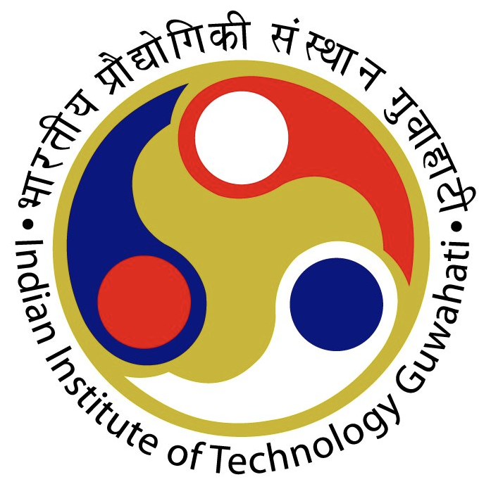
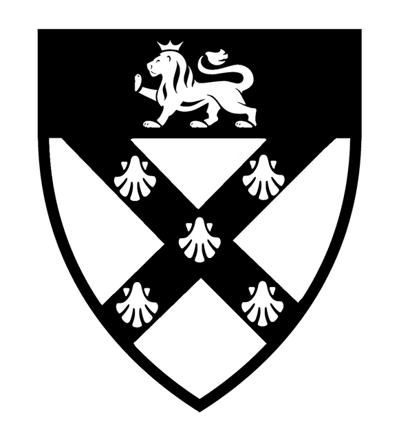

About
From switchgear to stochastic calculus.
My path runs from electrical systems at NIT Delhi, through finance automation at Americana in the Gulf, to quantitative finance at Rutgers — and now back to Dubai, where I build the software a UAE family office actually needs.
The work sits where markets, code, and rigorous theory meet: regime modeling with ARIMA-GARCH and hidden Markov models, tail risk with vine copulas and 10,000-path Monte Carlo, and multi-objective allocation with HRP, Mean-CVaR, and Black-Litterman — across market, credit, liquidity, and operational risk.
I build transparent financial systems that adapt to volatility and let decision-makers act on evidence, not intuition — from the research code all the way down to the Nginx config it runs behind.
Now · Quantitative Researcher & Developer
What I'm building right now.
Akeyra (OperaFO) — Dubai
Dec 2025 — PresentMy current role: designing and running the quantitative core of a wealth-analytics platform for UAE family offices — end to end, from the research models to the server they run on.
A regime-aware GARCH + HMM volatility stack, AAOIFI-aligned Sharia screening across 4 standards, walk-forward rebalancing, and multi-currency consolidation — self-hosted on a hardened Linux stack with Nginx, systemd, and per-user authentication.
Full role detailsEducation
Five institutions, one trajectory.

Rutgers Business School — Master of Quantitative Finance
Financial Modeling · Stochastic Calculus · Risk Management · Quantitative Equity Trading · Fixed Income

IIT Guwahati — PG Certification in AI & ML
Deep Learning (DNN, RNN, CNN, LSTM) · Reinforcement Learning · Probabilistic Graphical Models

Oxford Brookes, UK — ACCA
Financial Accounting · Management Accounting · Financial Management · Performance Management

IBMI Berlin — Global Governance
Global Governance · International Law · International Politics · Essential Management Skills

NIT Delhi — B.Tech, Electrical & Electronics Engineering
Computational Methods · Signal Processing · Embedded Optimization · Field Modeling
Toolkit
Research code to running systems.
Programming & Data
Risk & Regulation
Quant & Production
BI & Reporting
Contact
Let's talk markets, models,
or mandates.
Based in Dubai, open to relocation globally. Reach out about quant research, risk engineering, or Akeyra.